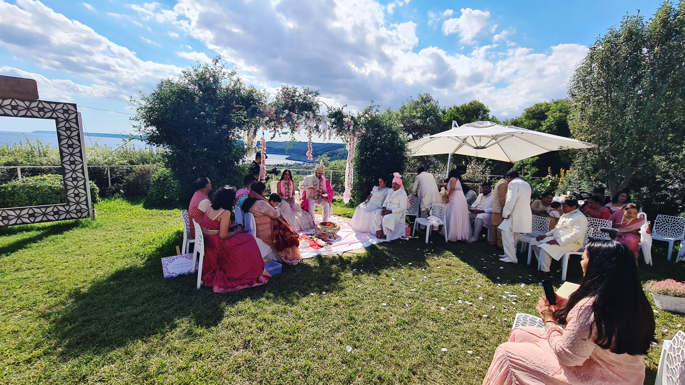

Il fascino autentico del Salento
Il Salento è molto più di una destinazione: è un’esperienza sensoriale totale. Scegliere Cala dei Balcani per il vostro matrimonio significa offrire ai vostri ospiti un viaggio autentico nel cuore della Puglia più vera: la pietra calcarea levigata dal vento, il profumo del mare Adriatico, i colori della macchia mediterranea, la luce calda che trasforma ogni istante in un ricordo indelebile.
La nostra location offre spazi tipicamente salentini, con soffitti a volta in pietra e ampie terrazze da cui ammirare tramonti mozzafiato. Qui, tu e i tuoi ospiti avrete l’opportunità di scoprire il vero cuore del Salento, con esperienze che vanno dalla degustazione di prodotti locali a passeggiate tra uliveti secolari.


Un matrimonio che diventa una vacanza
Il vostro matrimonio può diventare un’esperienza da condividere prima e dopo il giorno del sì. Il Salento vi offre un programma inesauribile:
- ✓ Cammino del Salento — percorsi naturalistici tra ulivi e fichi d’India
- ✓ Mare ed Escursioni — grotte marine, calette nascoste, fondali cristallini
- ✓ Relax — ritmi lenti, tramonti lunghi, aria salmastra
- ✓ Sapori e Degustazioni — olio, vini primitivo e negroamaro, pasticciotti
Chi arriva qui non cerca solo una location. Cerca un’esperienza: autenticità, natura, clima e accoglienza.
Cala dei Balcani: tante location in una.
Il tuo Salento in Miniatura.
Il mare è sempre presente. Ogni angolo di Cala dei Balcani porta con sé il profumo e il suono del mare Adriatico. Le terrazze panoramiche, i giardini sulla scogliera, la Torre Saracena — tutto si affaccia sull’acqua, tutto respira con il ritmo delle onde.
Non una masseria adattata. Non una struttura turistica che fa anche matrimoni. Cinque ambienti che si scoprono uno dopo l’altro. Il mare sempre presente.
Il Salento come regalo
per i vostri ospiti
Se sogni un matrimonio speciale, circondato solo dalle persone più care, la nostra location è il luogo ideale. Perfetta per matrimoni intimi, dove ogni dettaglio racconta una storia d’amore unica.
I vostri ospiti arrivano dall’estero? Cala dei Balcani diventa per loro un’introduzione al Salento più autentico — e loro la porteranno nel cuore ben oltre il giorno del sì.

Perché Sceglierci per il Tuo Destination Wedding
Network Fornitori Locali
Fotografi, fioristi, grafici e designer locali coordinati da noi. Per chi organizza dall’estero, un supporto fondamentale.
Cucina Internazionale & Salentina
Menù personalizzati con attenzione alle intolleranze. Gli ospiti internazionali rimangono entusiasti della cucina locale.
Staff Multilingue
Comunicazione fluida con sposi e ospiti internazionali. Assistenza prima, durante e dopo il grande giorno.
Cerimonia Civile Ufficiale
Cala dei Balcani è Casa Comunale. Sposatevi ufficialmente vista mare, in Salento.
Location Esclusiva
La struttura è interamente vostra. Nessun altro evento, solo la vostra festa.
Atmosfera Autentica
Lasciati avvolgere dalla bellezza del Salento e dall’atmosfera intima. Il tuo matrimonio, un evento unico.
“Cala dei Balcani è la scelta perfetta per unire due culture in un unico scenario magico. Il nostro matrimonio è stato definito dagli invitati come ‘divertente e dinamico’, reso possibile dalla pazienza e professionalità di Francesco e di tutta la squadra.”— Vanessa & Omar, coppia internazionale
Inizia a Pianificare il Tuo Matrimonio
Raccontaci il vostro sogno. Vi risponderemo entro 24 ore con tutte le informazioni di cui avete bisogno.